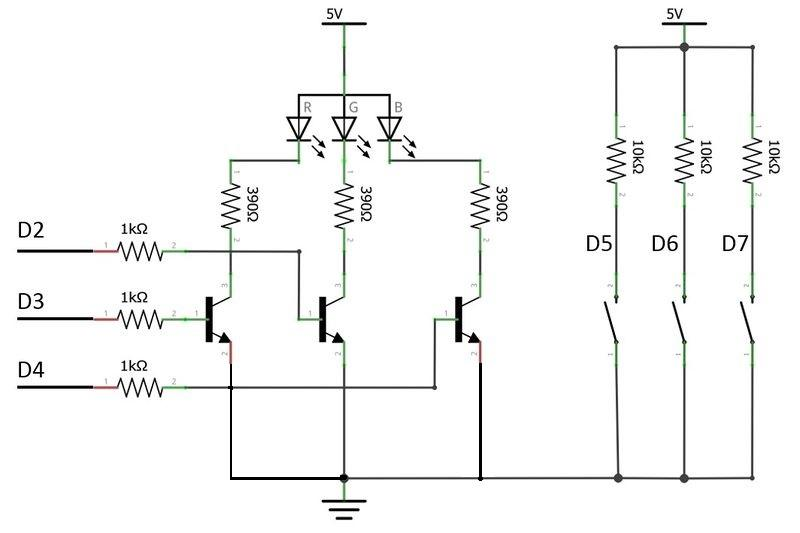
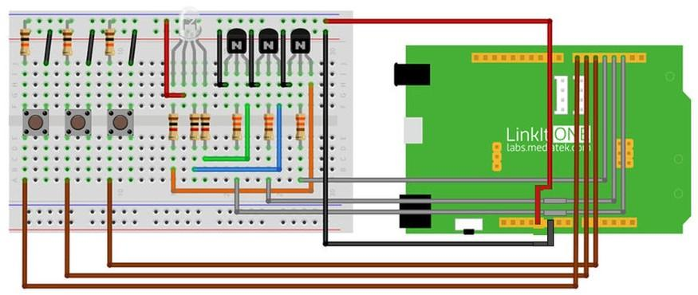

What We’re Doing
We now know how to control the LED's lets combine it with basic idea about combining colors. The R-Red G-Green B-Blue are the primary colors these colors when mixed in different proportion gives different colors. An RGB LED consists of four pins the long lead is the positive terminal and the other three lead are for controlling RGB colors. Make connections as shown in the Fig5.2 and upload the code.
Things you need
Schematic

Connection

Code
Please click on the button below to download the code for the kit:

You can unzip the file to the Examples folder of your Arduino IDE.
To access the demo code open:
File -> Examples -> Starter Kit for LinkIt -> Basic -> L5_Color_Pannel
const int ledR = 2; const int ledB = 3; const int ledG = 4; const int buttonR = 5; const int buttonG = 6; const int buttonB = 7; void setup() { pinMode(ledR, OUTPUT); // set all led pin OUTPUT pinMode(ledG, OUTPUT); pinMode(ledB, OUTPUT); pinMode(buttonR, INPUT); // set all button pin INPUT pinMode(buttonG, INPUT); pinMode(buttonB, INPUT); } void loop() { int stateR = 1-digitalRead(buttonR); // get state of button int stateG = 1-digitalRead(buttonG); int stateB = 1-digitalRead(buttonB); digitalWrite(ledR, stateR); // set led digitalWrite(ledG, stateG); digitalWrite(ledB, stateB); delay(10); }
Troubleshooting
Making it better
Do you want to get more colors? There are two buttons to adjust the RGB values of successive rises. Then we can find more colors. Try to build the circuit linking the two analog output interface (RGB values were increased higher or lower). Code has been defined to get it. (PWM analog output, you get a return value of the output of the analog 0-1023 to use.)
To open the demo code：
File -> Examples -> Starter Kit for LinkIt -> Extend_Lesson –> L5_Colourful_RGB
More ideas
How expand the code to turn down the RGB values?
Reference